OpenSprinklerPro kiterjesztések
Az OpenSprinklerPro egy kibővített funkciókészlet az OpenSprinkler öntözésvezérlőkhöz, amelyek modern rádiós integrációkat, fejlettebb érzékelőket, online frissítéseket, valamint AI/MCP hozzáférést és komplex eszköz-felügyeletet igényelnek. Az alapvető OpenSprinkler funkciókra épül: zónák, programok, időjáráshoz való igazítás (Weather Adjustment), naplózás és távoli elérés az applikáción/böngészőn keresztül.
Az OpenSprinklerShop saját szoftverága (Firmware), amely tartalmazza az OpenSprinklerPro kiterjesztéseket is, az upstream verzióktól független verziószámozást használ. A jelenlegi OpenSprinklerShop firmware verzió: 2.4.0(226).
Áttekintés
Az OpenSprinklerPro a következő területeken kínál kiegészítő funkciókat:
- Online OTA frissítés állapotjelzéssel, verzióellenőrzéssel és automatikus biztonsági mentési végpontokkal.
- ESP32-C5 rádiós funkciók: Beépített Zigbee átjáró (Gateway) / kliens támogatás és IEEE 802.15.4 üzemmódváltás.
- Bluetooth (BLE) érzékelők támogatott ESP32 és Bluetooth-al rendelkező OSPi rendszereken.
- FYTA felhő alapú növényi érzékelők integrációja (talajnedvesség és hőmérséklet méréséhez).
- Matter és ESP RainMaker integráció az okosotthonos eszközkapcsolatokhoz.
- MCP interfész mesterséges intelligencia (AI) asszisztensek számára (közvetlenül a firmware-en vagy külső Node.js MCP szerveren).
- Értesítési események (MQTT, e-mail, IFTTT és fejlettebb automatizálások).
Platform elérhetőség
| Funkció | ESP32-C5 Zigbee | ESP32-C5 Matter | ESP32 / non-C5 | ESP8266 | OSPi |
|---|---|---|---|---|---|
| Alap öntözési funkciók, programok, web UI | ✅ | ✅ | ✅ | ✅ | ✅ |
| Online OTA (Web UI frissítés) | ✅ | ✅ | ✅ | ✅ | ❌ |
| Script/Git alapú frissítés | ❌ | ❌ | ❌ | ❌ | ✅ |
| HTTPS / ACME tanúsítványok | ✅ | ✅ | ESP32-függő | ❌ | ❌ |
| Zigbee / IEEE 802.15.4 | ✅ | ❌ | ❌ | ❌ | ❌ |
| BLE (Bluetooth) érzékelők | ✅ | ✅ | funkcióflag-függő | ❌ | ✅ Linux BT-n át |
| Matter végpont | ❌ | ✅ | funkcióflag-függő | ❌ | ❌ |
| ESP RainMaker | ✅ | ✅ | ESP32-függő | ❌ | ❌ |
| FYTA érzékelők | ✅ HTTPS | ✅ HTTPS | ✅ HTTPS | ✅ Csak HTTP | ✅ HTTPS |
Beépített firmware MCP /mcp |
✅ ESP32 + USE_OTF |
✅ ESP32 + USE_OTF |
✅ ESP32 + USE_OTF |
❌ | ❌ |
| Külső Node.js MCP szerver | ✅ | ✅ | ✅ | ✅ | ✅ |
Megjegyzések:
- Az ESP32-C5 Zigbee és Matter változatok különálló firmware-ek. A Zigbee és a Matter rádiócsatornák nem futhatnak egyidejűleg ugyanazon az ESP32-C5 chipen.
- A Zigbee végpontokhoz ESP32-C5 és OS_ENABLE_ZIGBEE opció szükséges.
- A BLE végpontokhoz ESP32 és OS_ENABLE_BLE szükséges; az ESP8266 nem támogatja a BLE-t.
Lásd még: API kiegészítések (opcionális), CHANGELOG.
Felhasználói felület (UI) és mobil képernyőfotók
Az OpenSprinklerPro kiterjesztéseit a normál webes/appos felhasználói felületről vezérelheti. A REST API végpontok elsősorban integrációkra és diagnosztikára szolgálnak; a felhasználói beállítások az alábbi menükből érhetők el.
| Kiterjesztés | Funkció / Menü elérési út | Képernyőkép |
|---|---|---|
| Online firmware frissítés | Oldalsó menü → Online Update | 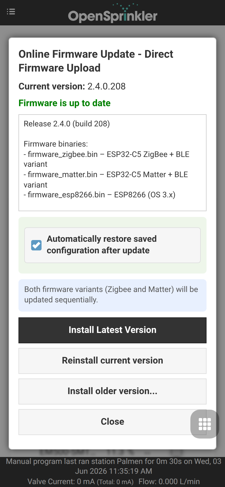 |
| ESP32-C5 rádiómód / Matter választás | Oldalsó menü → Setup ESP32 Mode | 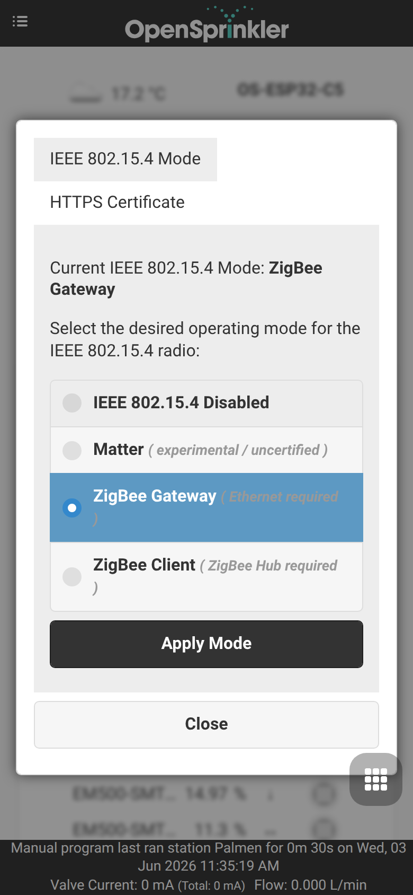 |
| Zigbee átjáró (Gateway) | Oldalsó menü → ZigBee Gateway | 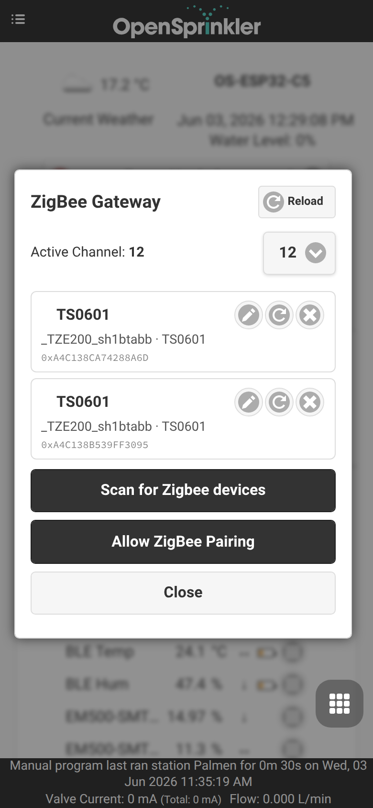 |
| ESP RainMaker | Oldalsó menü → RainMaker | 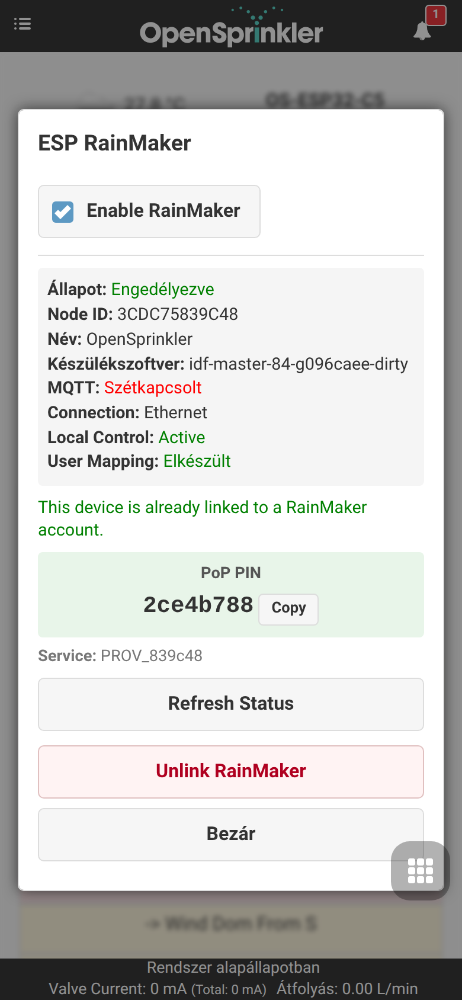 |
| MQTT, e-mail, IFTTT és értesítések | Alsó menü → Edit Options → Integrations | 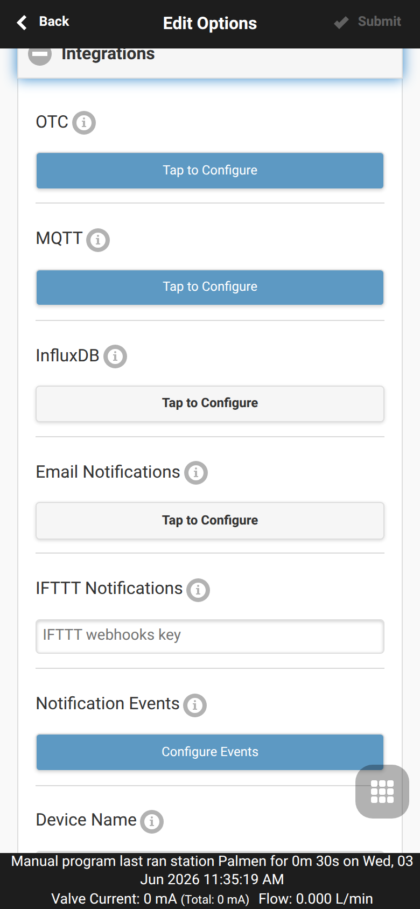 |
| Érzékelők, FYTA és monitorok | Alsó menü → Analog Sensor Configuration |  |
| Új érzékelő hozzáadása/szerkesztése | Alsó menü → Analog Sensor Configuration → Add Sensor | 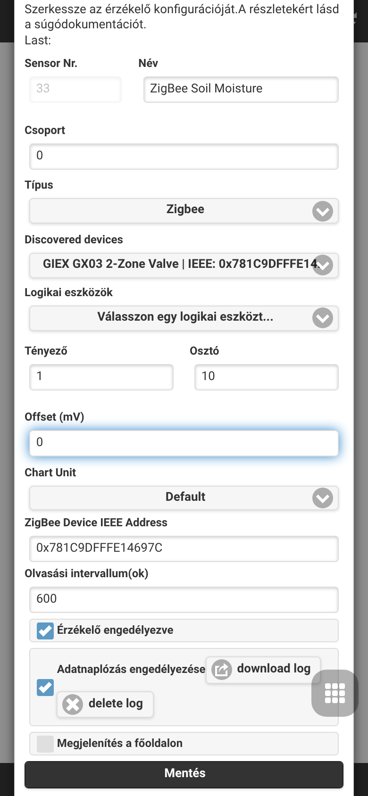 |
| Program korrekciók | Alsó menü → Analog Sensor Configuration → Program Adjustments | 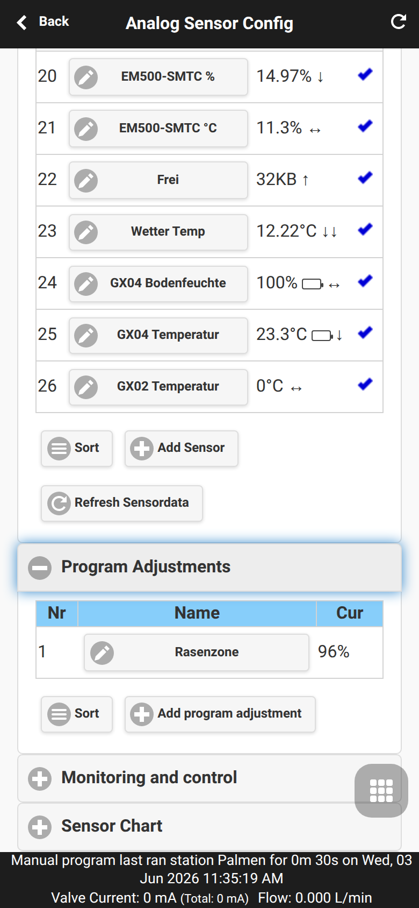 |
| Új program korrekció | Alsó menü → Analog Sensor Configuration → Program Adjustments → Add program adjustment | 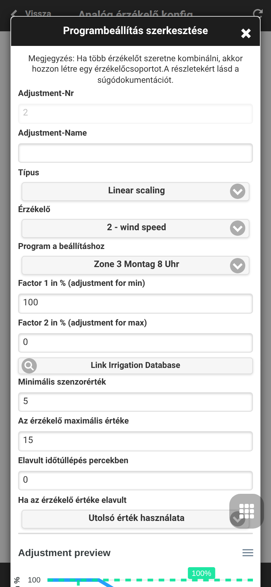 |
| Helyi monitorozás szabályai | Alsó menü → Analog Sensor Configuration → Monitoring and Control |  |
| Új monitor hozzáadása | Alsó menü → Analog Sensor Configuration → Monitoring and Control → Add monitor |  |
| Érzékelő grafikontábla | Alsó menü → Analog Sensor Configuration → Sensor Chart | 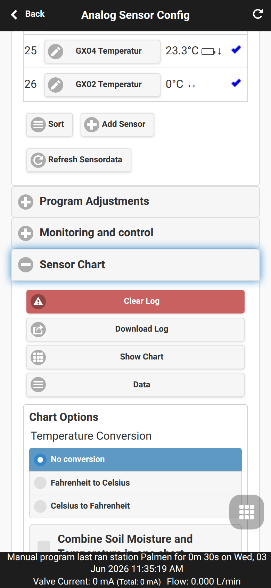 |
| FYTA konfiguráció | Alsó menü → Analog Sensor Configuration → FYTA Setup | 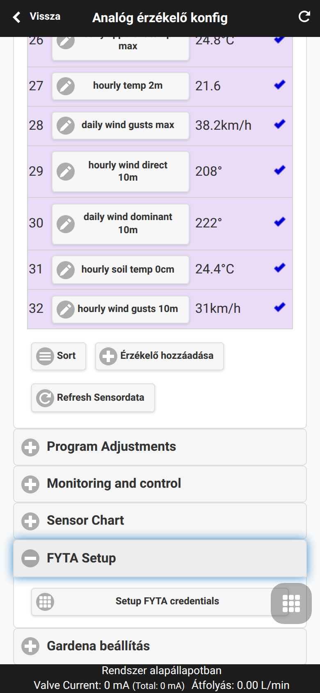 |
| FYTA fiók adatok | Alsó menü → Analog Sensor Configuration → FYTA Setup → Setup FYTA credentials | 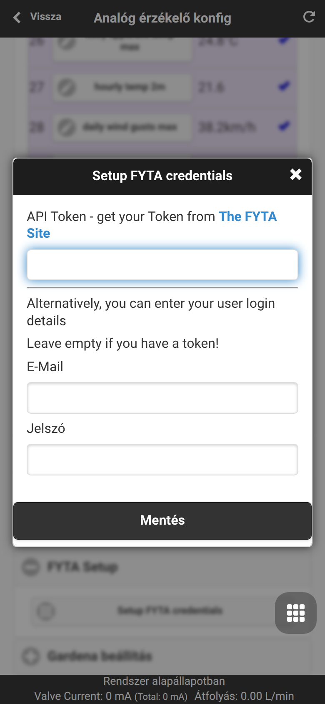 |
| Biztonsági mentés és visszaállítás | Alsó menü → Analog Sensor Configuration → Backup and Restore | 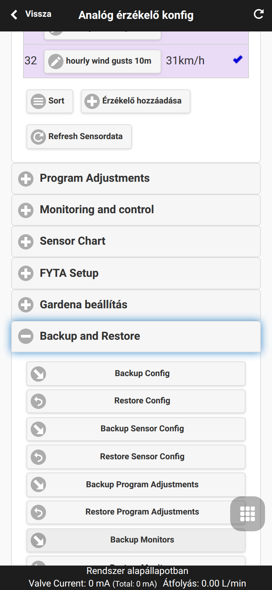 |
| Rendszerdiagnosztika | Oldalsó menü → System Diagnostics | 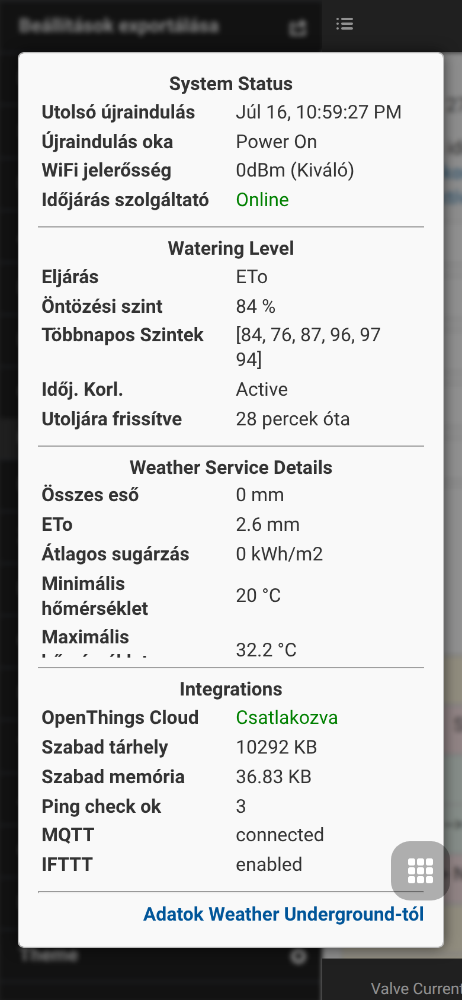 |
Online OTA szoftverfrissítés (Update)
A Pro firmware tartalmazza az integrált online frissítéskezelést (online_update.cpp). A vezérlő lekéri az elérhető szoftverváltozatok listáját az internetről, elvégzi a biztonsági mentést, konfigurálja a frissítést és mindezt valós időben közvetíti a felületen.
UI használata: Nyissa meg az oldalsó menüt, majd válassza az Online Update menüpontot. Ez az ajánlott eljárás a frissítésre, mivel biztonsági mentést is készít a szoftver letöltése és flashelése előtt.
Megjegyzések: - ESP32 és ESP8266: Az OTA frissítés a web UI-n és manuális bináris fájl-feltöltésen keresztül is elérhető. - OSPi: A frissítés terminal/Git/script segítségével történik, nem az OTA felületen. - Az online frissítés működéséhez aktív internetkapcsolat szükséges.
Frissítés előtt mindenképpen készítsen biztonsági mentést. Az API automatikus hívásokat is támogat: /uc az ellenőrzéshez, /uu a frissítés indításához, /us az állapot lekéréséhez, és /ub a teljes biztonsági mentés elkészítéséhez.